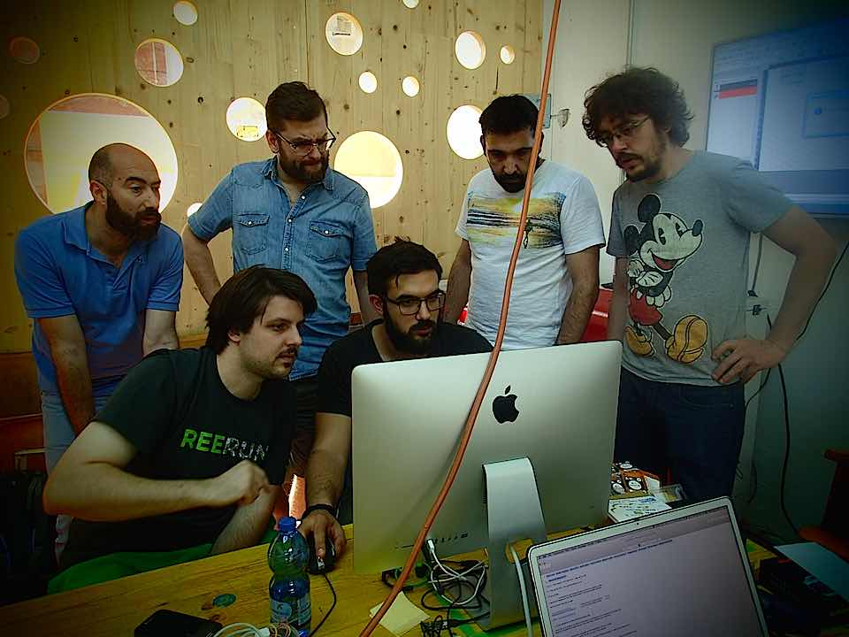
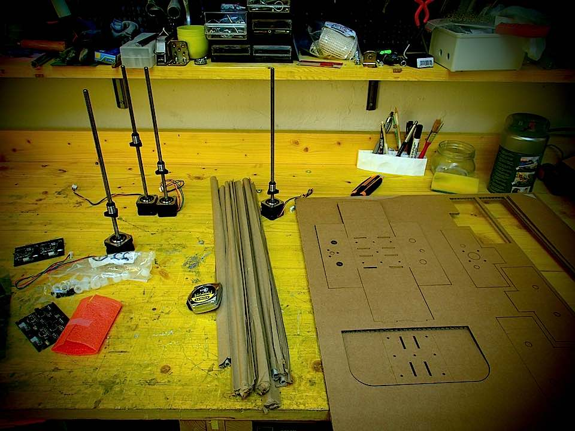
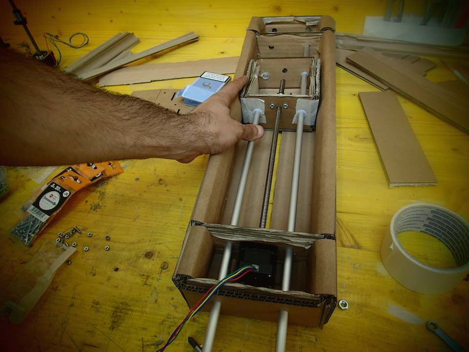
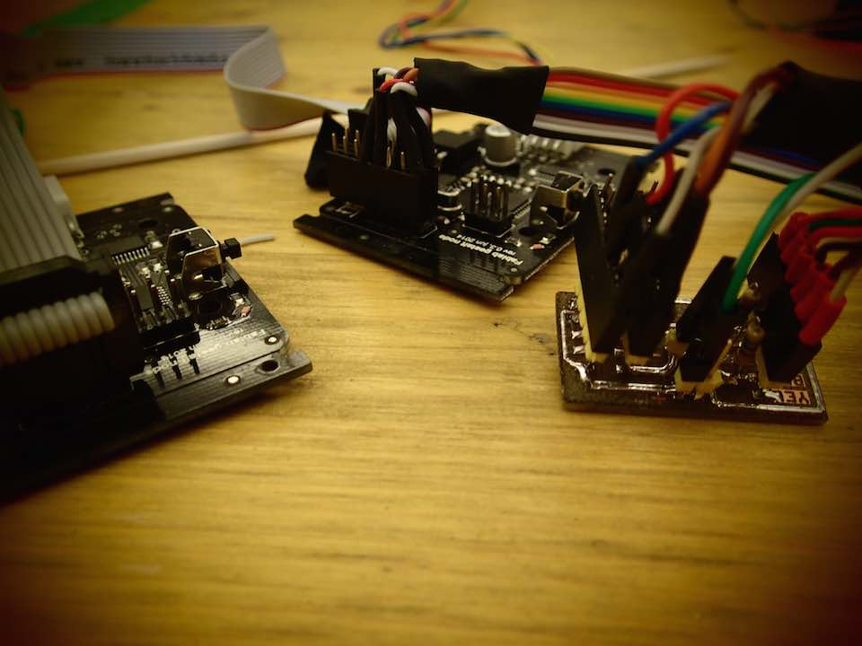
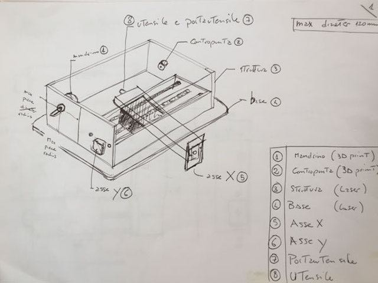
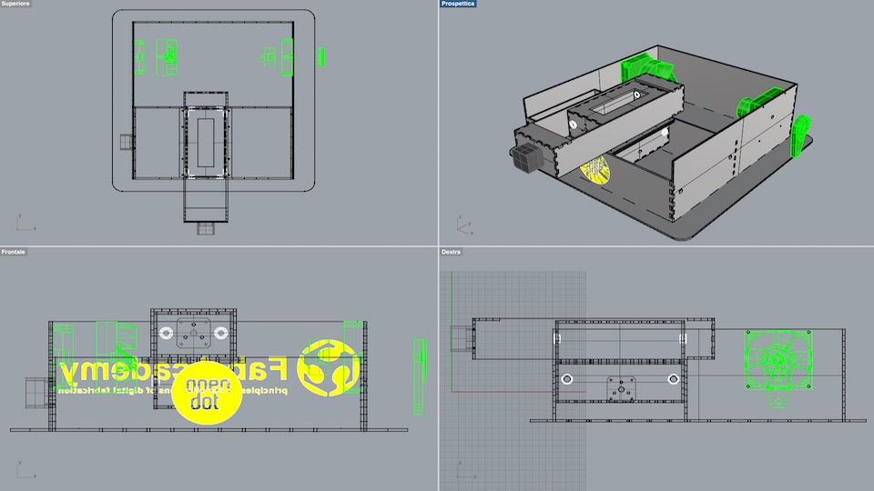
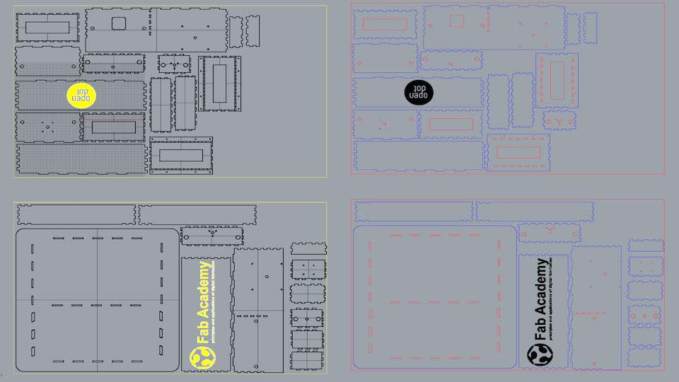
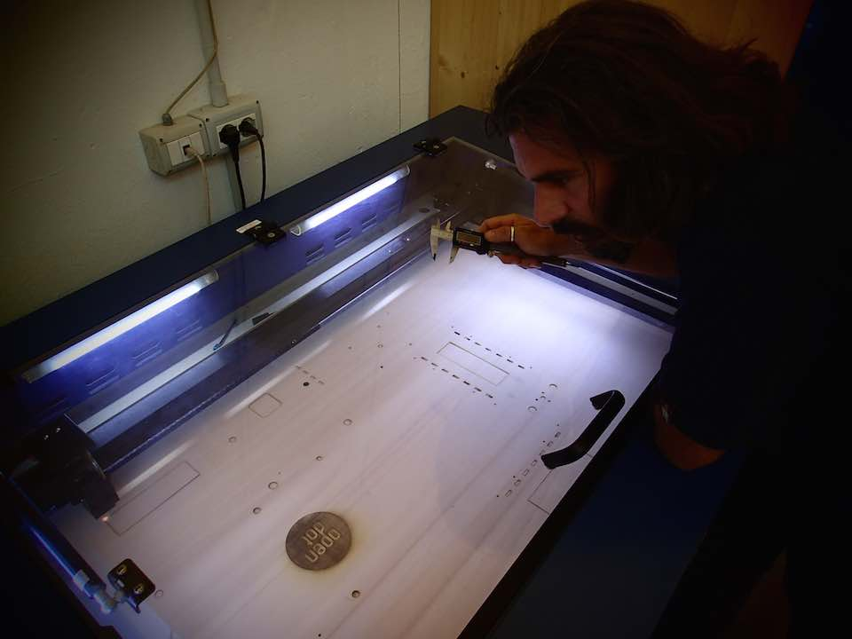
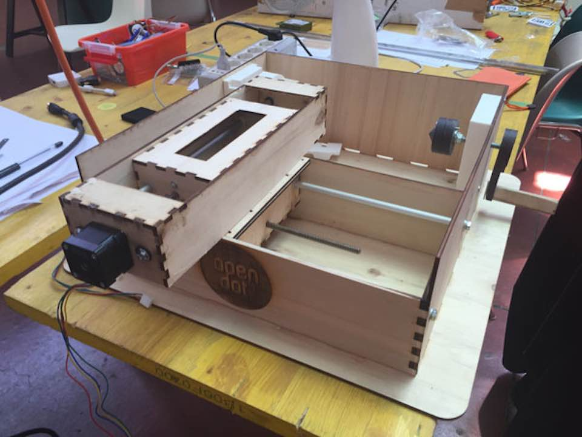
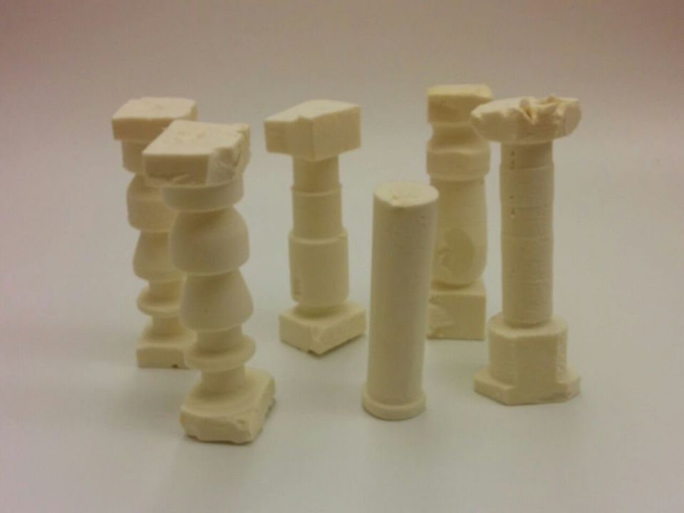

****************************************************************************************************************
****************************************************************************************************************
FOREWORD : THE CURRENT STATE OF THINGS
We are nearing the end of this unbelievable adventure
HHere in the Open Dot Lab, late nights are a regular thing. Nevertheless work is currently progressing satisfactorily. We are a true team !!! :-)

PART 1: MODULAR MACHINE THAT MAKES: CARDBOARD CNC
The first part of the job was to assemble the cardboard prototype. To do this, we modified the FILE through Grasshopper, adjusting it to the thickness of the cardboard in our possession (0.5 mm)

The result is fairly cheap because of the low quality of the cardboard; however the assembled linear stages flow correctly

PART 2 : GETTING STARTED WITH GESTALT NODES
The second part was the preparation of the Gestalt nodes.
After milling (lasered here in Open Dot ) the Fabnet I soldered the components and prepared it for the use.
Finally I soldered the 6 pins cable to connect the Fabnet header to the first node
After soldering the FTDI RS-485 it is possible to complete the Gestalt nodes connection :
COMPUTER --> FTDI RS-485 --> FABNET --> 6 PIN CABLE ---> GESTALT --> FLAT 10 PIN CABLE --> GESTALT --> ECT...

PART 3 : CAD AND LASER CUTTING
In this part I started direct collaboration with 2 classmates :
ENRICO BASSI who drew the plans of the lathe machine.

MATTIA CIURNELLI who produced the 3D model on Rhinoceros.

I recovered the file and transformed it into 2D for the laser cutter.

Once the cutting phase of the 5 mm wood has been completed, we proceeded to the assembly stage.

It was very interesting for me to learn the technique of threading the linear bars, after having cut them to the correct size.
FINAL RESULT : THE LATHE MACHINE :-)

